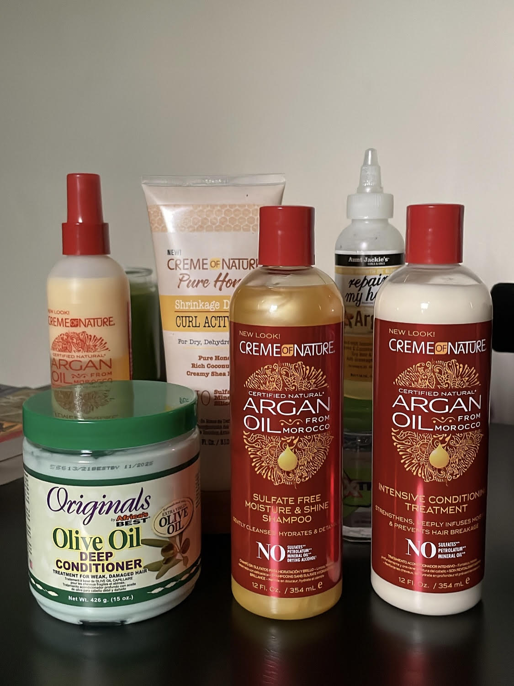

2 Tips to Maintain Healthy Colored Natural Hair
October 7, 2024 by Abigail Anderson
Color-treated natural hair requires a little extra care to maintain vibrancy and health. These tips will guide you on how to keep your hair hydrated, strong, and protected.
1. Establish a Consistent Wash Day Routine
A proper wash day routine is crucial to keeping colored hair healthy and hydrated. Start by using a sulfate-free shampoo, like Creme of Nature’s Sulfate-Free Moisture & Shine Shampoo, which cleanses gently without stripping your hair of essential oils. Follow up with a deep conditioner such as Originals Olive Oil Deep Conditioner or Creme of Nature’s Intensive Conditioning Treatment to restore moisture and strengthen the hair. This ensures your hair remains soft, nourished, and less prone to breakage.
2. Moisturize Regularly
After your wash day, maintaining moisture is key. Use leave-in conditioners and curl activators, like Creme of Nature’s Pure Honey Shrinkage Defense Curl Activator, to keep your curls hydrated and defined. Seal in this moisture with a natural oil, such as Aunt Jackie’s Repair My Hair Argan Oil, which will add shine and protect your strands from dryness.
Conclusion
With these simple tips, you can maintain the vibrancy of your colored natural hair. Start today and embrace the beauty of your healthy, colored curls!